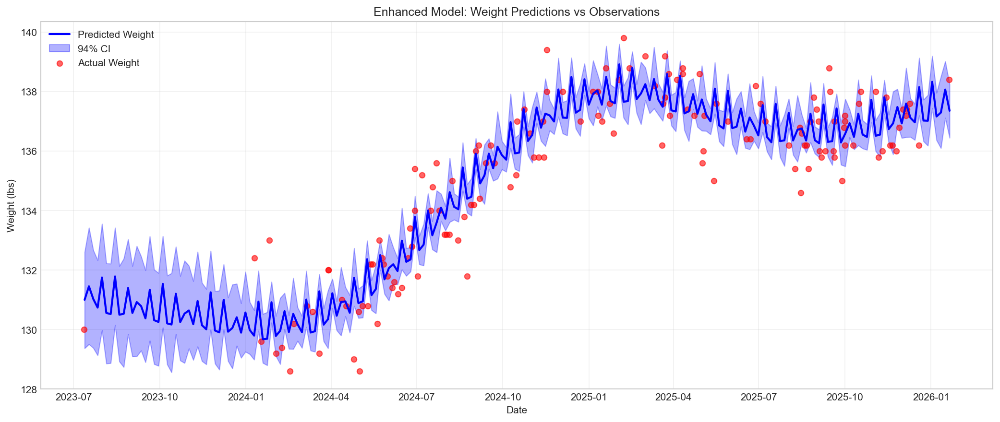
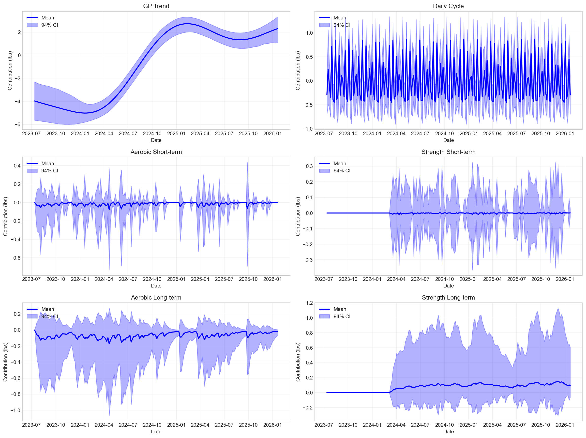
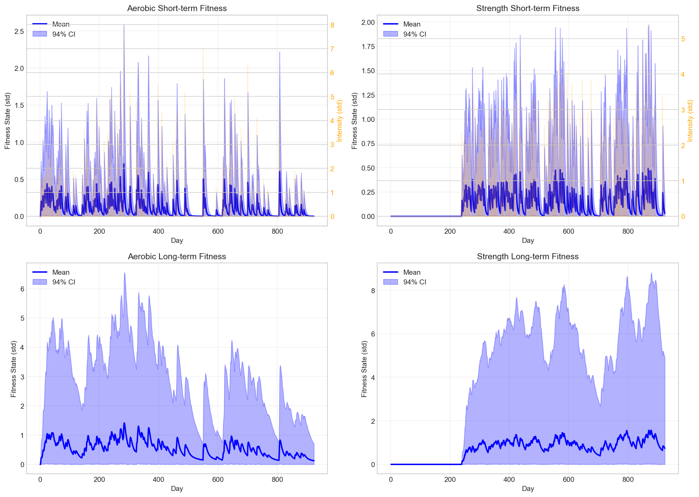
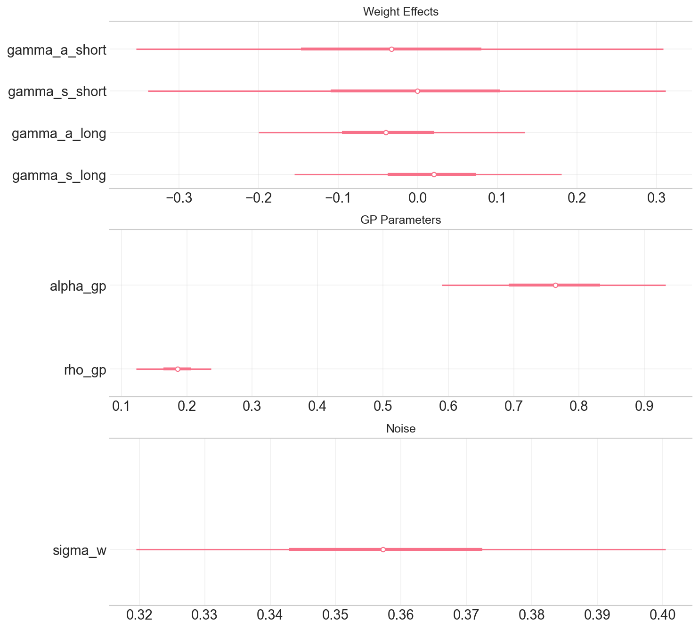
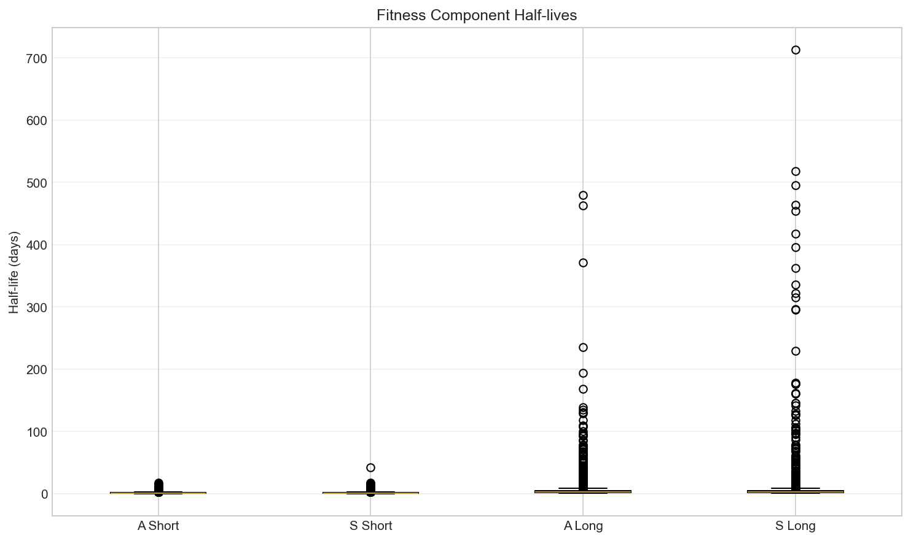

Enhanced Sensitivity Model: Missing Visualizations
Key Time Series and Component Analysis
Generated: 2026-03-02 14:32:06
🎯 Essential Visualization Suite
This report provides the missing visualizations showing time series and component interactions for the enhanced sensitivity model.
📈 Component Time Series
1. Weight Predictions

Model predictions vs actual weight observations with credible intervals.
2. Component Breakdown

Individual contributions of all 6 model components over time.
3. Fitness State Evolution

Time series of all 4 fitness states with activity intensity overlay.
4. Variance Proportions

Relative importance of each component in explaining weight variance.
📊 Parameter Analysis
1. Key Parameters

Posterior distributions of weight effects, GP parameters, and measurement noise.
2. Half-life Distributions

Half-lives of fitness decay for each component type.
🔗 Related Reports
Complete Analysis Suite
- Enhanced Model Visualizations - Comprehensive visualizations
- Enhanced Sensitivity Report - Detailed analysis report
- Enhanced Model Overview - Model summary and diagnostics